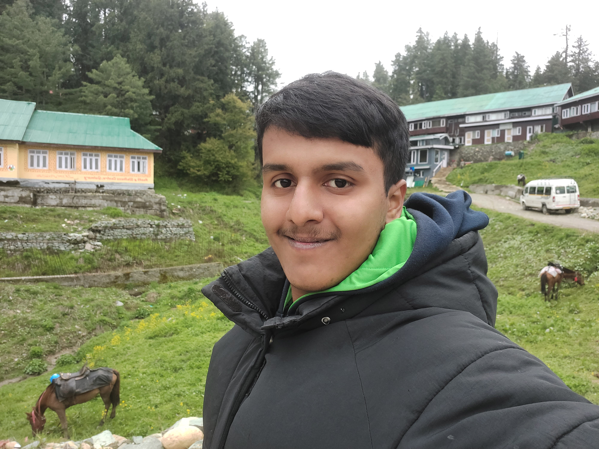

This is my website containing a gist of my profile, projects, academics and extra-curricular interests. I am 22 years of age. I am pursuing a Dual Degree at IIT Bombay: B.Tech in Electrical Engineering and M.Tech in Artificial Intelligence and Data Science. For my masters thesis, I am working in the field of Music Information Retrieval on a task aimed at finding correspondence between mutiple modalities in Hindustani classical music performances. I am a budding Data Scientist and ML engineer. Developing intelligent systems for automation and building end-to-end pipelines for their seamless working interests me quite a lot. I am going to join NoBroker Technologies Solutions Pvt Ltd. in August 2024 as an Associate Data Scientist.
